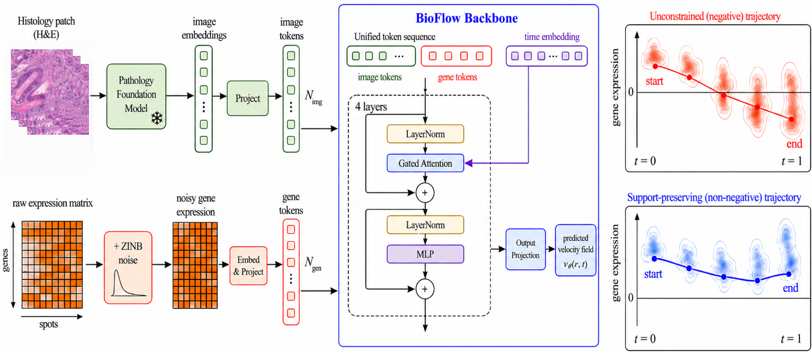

BioFlow: A Biologically Valid Support-Preserving Flow for Histology-Conditioned Spatial Transcriptomics Prediction
This work reflects my interest in generative methods through the lens of flow matching. In spatial transcriptomics prediction, gene expression is sparse, zero-inflated, and strictly non-negative, while many existing generative models still evolve in unconstrained Euclidean space.
BioFlow addresses this mismatch by building the support constraint directly into the flow-matching dynamics rather than fixing invalid outputs afterward. The core idea is to preserve biologically valid trajectories throughout generation, so the model respects the geometry of count-based expression data at the trajectory level.
More broadly, this project captures the kind of generative modeling I care about: methods that are not only accurate, but also structurally aligned with the data domain during the full generation process.